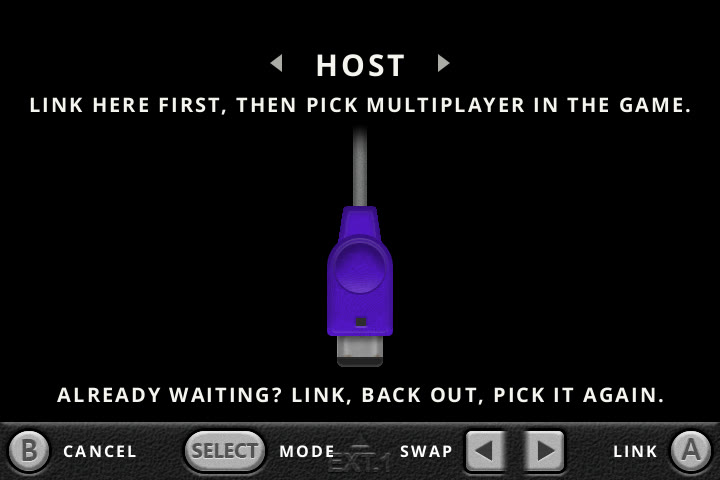
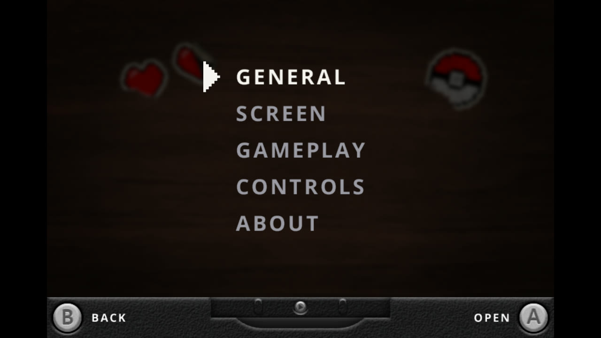
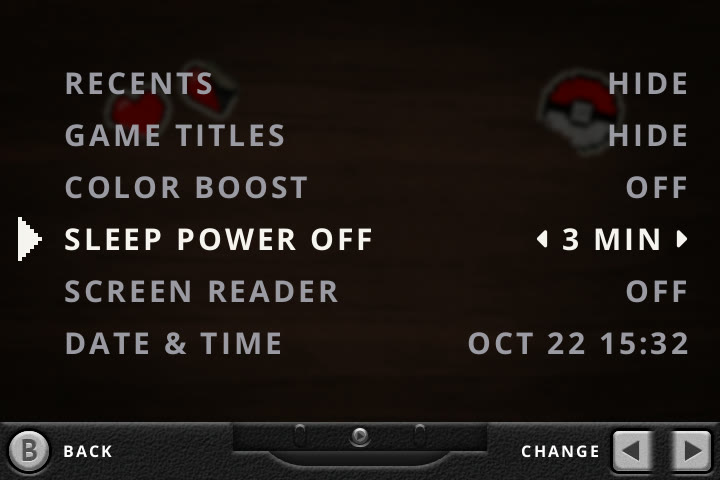

- Problem
- Game Boy games were made to be linked by a cable: to trade Pokémon, or to race in Mario Kart. My handhelds play them through emulators (programs that act like the original console), so there is no cable. Slot, the game menu I use, could link Game Boy Advance games over Wi-Fi, but not the older Game Boy and Game Boy Color, and a handheld on one emulator had no way to link with one on another.
- Result
- Linking now feels close to plugging in the cable, which was the goal I set. Game Boy and Game Boy Color games link at close to a real cable’s speed, four players can share one cartridge, players on different emulators can trade, and a whole game can be sent to another handheld. On the newest build, 28 of 28 linked-play checks passed on my four handhelds, linked straight to each other by radio. Still open: players other than the host feel more button delay than the host.
Added . Last changed .
- Problem
- Game Boy games were made to be linked by a cable: to trade Pokémon, or to race in Mario Kart. My handhelds play them through emulators (programs that act like the original console), so there is no cable. Slot, the game menu I use, could link Game Boy Advance games over Wi-Fi, but not the older Game Boy and Game Boy Color, and a handheld on one emulator had no way to link with one on another.
- Built
- Wireless link play for Game Boy handhelds. The link cable, rebuilt over radio at 98% of real-cable speed: trades, four players off one cartridge, sending a whole game to another device. The handhelds also got screens that look like the original hardware, TV output and AirPods sound. Every build is verified on a rig of four real handhelds that compares game state about once a second. The latest passed 28 of 28. Slot is a free, open-source game menu for small handheld game players, made by Brandon Kowalski. I use it on four Anbernic handhelds and, since October, have been extending it in my own copy: Game Boy link play over the air, four players from one cartridge, sending a game to another handheld, a screen that looks like the original consoles, TV output and AirPods sound. None of it has been sent to the original project.
- My rules
- It should feel like plugging in the cable
- Any emulator, at the original speed
- Only handheld-to-handheld radio counts
- AI wrote
- the code and the test rig
- I tested
- Each build by hand on my handhelds
- Caught breaks the automatic tests passed
- Supplied my own games and saves for the rig
- Now
- Linking now feels close to plugging in the cable, which was the goal I set. Game Boy and Game Boy Color games link at close to a real cable’s speed, four players can share one cartridge, players on different emulators can trade, and a whole game can be sent to another handheld. On the newest build, 28 of 28 linked-play checks passed on my four handhelds, linked straight to each other by radio. Still open: players other than the host feel more button delay than the host.
Read the script
Game Boy link play with no cable, added to Slot, Brandon Kowalski’s game menu for handhelds. The brief: feel like plugging in the cable. Each build was played by hand, catching what automatic tests missed: Share Game stalling, then dropping. Three calls shaped it. Only handheld to handheld radio counts. The host always leads. Late presses wait, never rewind. With the host leading, trades between two emulators passed 20 of 20. A whole game, 16 MB, moves in 2.8 seconds, and now picks up again after a drop. On four handhelds linked straight to each other, never through a router, the newest build passed 28 of 28. Link play, without the cable. Details are below.
Wireless link play for Game Boy handhelds. The link cable, rebuilt over radio at 98% of real-cable speed: trades, four players off one cartridge, sending a whole game to another device. The handhelds also got screens that look like the original hardware, TV output and AirPods sound. Every build is verified on a rig of four real handhelds that compares game state about once a second. The latest passed 28 of 28. Slot is a free, open-source game menu for small handheld game players, made by Brandon Kowalski. I use it on four Anbernic handhelds and, since October, have been extending it in my own copy: Game Boy link play over the air, four players from one cartridge, sending a game to another handheld, a screen that looks like the original consoles, TV output and AirPods sound. None of it has been sent to the original project. My part: the idea, every feature list, the calls on how the link behaves and what counts as a pass, and testing each build by hand on the handhelds. AI wrote the code and the test rig.
My rules
- It should feel like plugging in the cable
- Any emulator, at the original speed
- Only handheld-to-handheld radio counts
AI wrote
the code and the test rig
I tested
- Each build by hand on my handhelds
- Caught breaks the automatic tests passed
- Supplied my own games and saves for the rig
What I set out to build
It started on October 18 with a short note: add the Gambatte emulator for Game Boy and Game Boy Color games, link them the way Slot already linked Game Boy Advance games, but speak the real Game Boy cable’s protocol, and fix how Game Boy Color palettes cycled. As it grew, I wrote the bar down plainly: linking should feel as simple as plugging in the original cable and starting a game; whichever emulator a player picks, it should behave like the original hardware; and the delay should be as small as possible. In November I widened it to every form of multiplayer the consoles had, at hardware speed, proven on four real handhelds.
Features I designed
- Share Game. My design: press L2 and R2 on the shelf, pick Send or Receive, and the two handhelds link the way link play does. The game’s label and manual go with it, the cartridge flies off the top of one screen and lands on the other’s shelf, the other player is asked first, and a save that would be replaced goes to a recycle bin instead of being deleted. A 16 MB game moves in 2.8 seconds.
- Four players, one cartridge. On the original console, one copy of Mario Kart: Super Circuit was enough for four: the others downloaded a small version through the cable. I asked for the same from the menu: Select and Menu open the link screen, a player with no cartridge starts the console’s own start-up screen, and the host’s game does the rest. 20 of 20 four-player sessions stayed in sync by radio.
- The link-first tip. The two lines on the link screen above, because a game set to multiplayer before the link is made may never find it.
- A screen like the original. An early shader only made light pixels see-through. I sent it back: the goal is the look of each console’s original screen, and pointed to an existing Game Boy Color version as the model. Game Boy and Game Boy Advance versions followed, and I made sure later rebuilds kept them.
- Colors and start-up as on the real consoles. Palettes from the original Game Boy, Game Boy Color and Super Game Boy; the button combinations at start-up that changed colors on real hardware; the start-up animation that matches the palette; each game opening in the colors it last used.
- TV and headphones. TV output, with my one condition: the correct screen shape, no stretching. For Bluetooth I asked for AAC sound because I use AirPods.
AirPods sound

Colors while playing

Decisions I made
- Faster before I test. The first Game Boy link worked but crawled, about 30 bytes a second, because every byte waited on Wi-Fi. I asked for it to be made fast before my first test. It was rebuilt so only button presses cross the air and each handheld runs both consoles: 994 bytes a second, against 1,011 on a real cable.
- Wait a little, never rewind. Asked how to make the link steadier, I chose a delay that adjusts to the connection and turned down rewinding (guessing ahead, then undoing a wrong guess), because rewinding sounded like a source of new problems.
- Keep the link that works. When the newer links were being built, I ruled that the working Game Boy link was not to be changed unless there was no other way.
- Same emulator first. When every new link broke at once, I set the order: each emulator must link with itself before any work on mixing emulators. My reasoning on the mix: copy what the original cable carried, so each side receives only what its game expects. A Pokémon Emerald trade between mGBA and gpSP then passed 4 of 4 times, after failing 6 of 6.
- Only handheld-to-handheld radio counts. When I learned most runs had gone through the home router, I called those tests useless. Every one was rerun handheld to handheld, and router runs became fault-finding only.
- The host always leads. I asked why it was not clearer which side leads the link. The answer became a rule: the host’s console always sets the pace. Pokémon Crystal trades between two emulators went from failing about 1 in 4 to 20 of 20, first try every time.
- Small dips are notes, real slowdowns are failures. A frame-rate dip of about two frames for a second is noted beside the result. Anything slower still fails.
What I caught on the handhelds
- Every new link broken, November 15. All the new multiplayer connections joined, but the games never saw a cable. Only the original Game Boy link still worked. That report set the same-emulator-first order above.
- Share Game dropping, November 21. On my handhelds, Send stuck on “waiting to receive” and then the link dropped, though the automatic test had passed. The cause: after a radio gap of more than 8 seconds, the send started over from the first byte. It now picks up where it stopped: 13 of 13 sends passed by radio, from 64 KB to 32 MB, with each copy checked.
- A rig that could not run alone, November 17. The handhelds did not join Wi-Fi at start-up until a button was pressed, so overnight tests would stall. A build that joins at start-up came next.
- Screen faults from playing. Fit squeezed Game Boy games, the original-screen shader had gone missing on Game Boy Advance, the in-game Bluetooth page did not show connected headphones, and rounded corners appeared where the dock should be square. Each went into the next update.
- One cartridgeon the host handheld only
- The downloadthe host sends the small game to each player by radio
- Every console on every handheldeach one runs all four, side by side
- Only buttons traveleach player’s presses go to everyone
- Checked while playingthe host compares every copy about once a second
- Same race on four screens20 of 20 sessions in sync by radio
The newest build, by radio
The 28 linked-play checks run on four handhelds on November 21, 2026, by kind. Every one passed.
How it was tested
- My four handhelds, on loan to the rig. I set them up so the Mac could reach them, and supplied my own game copies and saves, including Pokémon saves for the trade tests. The Mac installs each build, starts the games and presses the buttons; the link itself always runs handheld to handheld.
- Every copy compared. While playing, the copies of every console are compared; a run passes only if they all match from start to finish.
- Speed against the hardware. I asked for proof of one-to-one speed, not just a link that holds. In the first four-handheld runs every handheld played at about 59.6 frames a second, and no message was lost.
- My real saves kept safe. One handheld holds my own saved games. They were checked unchanged after every set of tests.
On a TV

Sleep timer

What's next
- In games where each player has a cartridge, players other than the host still feel 11 frames of button delay against the host’s 4. A fix is being built now.
- Trying TV output on a real TV.
- Whether to offer any of this to the original project is still my call to make.